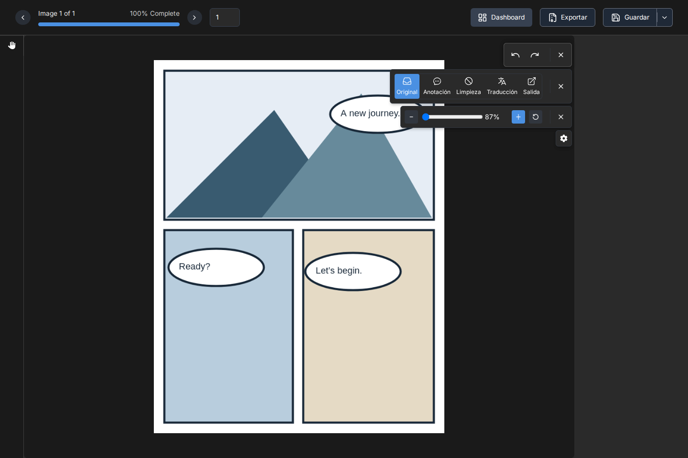

SaaS · Automatización e IA
Asistente de WhatsApp
Plataforma multiempresa para atender consultas, gestionar conversaciones y reservar citas con asistencia de IA.
Ver el casoFull stack · Automatización · IA
Desarrollo aplicaciones web, conecto sistemas y automatizo procesos. Soy Abisay Medina y colaboro con agencias y empresas para llevar sus proyectos a la práctica.
Desde República Dominicana · Colaboración remota
Una plataforma para gestionar varios negocios.
Proyectos seleccionados
Interfaces, lógica de negocio e integraciones. Cada caso explica el alcance desarrollado y mi aporte.
SaaS · Automatización e IA
Plataforma multiempresa para atender consultas, gestionar conversaciones y reservar citas con asistencia de IA.
Ver el caso
Aplicación web · Integración de API
Aplicación de gestión hotelera conectada con la API XML de Veturis, con búsqueda, reservas, cancelaciones y vouchers.
Ver el caso
Editor web · Procesamiento de imágenes
Editor web de manga y manhwa con canvas, herramientas de texto, OCR y procesamiento asistido por IA.
Ver el casoAutomatización documental · Experiencia previa
Experiencia de automatización con Python para extraer cotizaciones de PDF, validar campos y exportar a un formato Excel de trabajo.
Ver el casoCómo puedo ayudarte
Portales, herramientas internas, agendas y sistemas de gestión adaptados al proceso de tu equipo.
Conexiones entre aplicaciones, servicios externos, bases de datos y flujos de negocio.
Asistentes que consultan información y ejecutan acciones, procesamiento de imágenes y tareas repetitivas.
Extracción, validación, normalización y exportación de información a Excel o bases de datos.
Landing pages, sitios corporativos e interfaces que pueden integrarse con otros servicios.
Colaboración freelance en frontend, backend o una integración concreta, con alcance acordado por proyecto.
Colaboración freelance
Puedo incorporarme a una parte de tu proyecto o encargarme del desarrollo completo, según lo que necesite tu equipo.
Revisamos qué quieres conseguir, los usuarios y los sistemas que ya utilizas.
Definimos funcionalidades, prioridades, alcance y puntos de revisión.
Trabajo en avances concretos para que puedas ver el producto y dar feedback.
Preparo la puesta en marcha y documento lo necesario para continuar el trabajo.
Diseño y desarrollo web
Una colección de muestras navegables para distintos sectores, con versiones de escritorio y móvil.
Explorar muestras webSobre mí
Soy Abisay Medina Rosario, desarrollador full stack con formación en Data Science y Big Data.
He construido aplicaciones que combinan interfaces, bases de datos, servicios externos e IA. Mi experiencia en cotizaciones, facturación y seguimiento a clientes también me ayuda a entender cómo se utiliza una herramienta en el trabajo diario.
Trabajo con React, JavaScript y TypeScript, Python/FastAPI, Node.js, PostgreSQL, Supabase, Redis y Docker, según las necesidades del proyecto.
Desarrollo de funcionalidades y documentación de procedimientos de prueba.
Análisis y depuración de código para detectar y corregir problemas de funcionalidad.
Graduado con altos honores.
Trabajemos juntos
Cuéntame qué quieres construir, qué tienes avanzado y dónde necesitas ayuda.
abisaymedinarosario@gmail.com